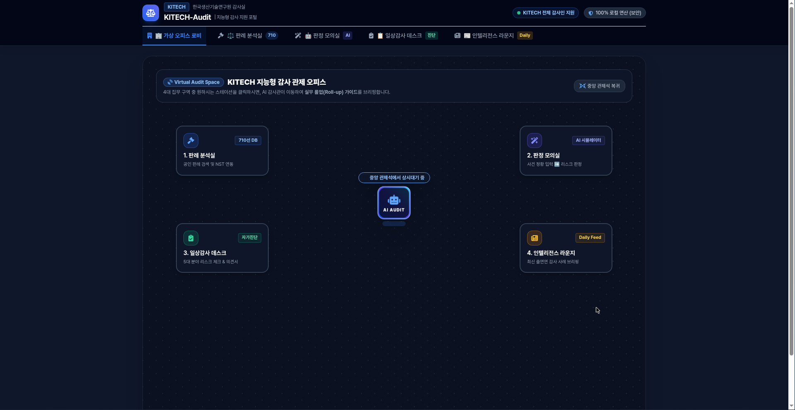

합·위법 경계가 모호할 때, 710선 판례와 AI가
1초 만에 법리 분기점과 실무 체크포인트를 제시합니다.
본 시스템은 KITECH 감사실 감사인들이 연구비, 계약, 복무, 괴롭힘 등 복잡한 감사 현안을 마주했을 때 사법 판례부터 원내 지침까지 다층 공인 근거를 대조·검증하고, 구글·네이버 원문 및 최신 생성형 AI 검색으로 심층 법리를 연계할 수 있도록 설계되었습니다.
내부 검색 기록 외부 서버 유출 전무
판례(T1)부터 KITECH규정(T4) 1:1 매핑
일상 업무 단어로 즉시 인스턴트 필터링
구글·네이버 1-클릭 및 AI 프롬프트 복사
가상 오피스 로비 입장 및 집무 구역 선택
포털 접속 시 4대 전문 집무 구역이 직관적으로 배치되어 있습니다. 업무 목적에 맞춰 원하는 스테이션을 클릭하여 이동하세요.

자연어 실시간 검색 & 4-Tier 공인 근거 필터링
복잡한 법률 용어를 몰라도 일상적인 업무 단어로 즉시 검색할 수 있습니다. 예를 들어 검색창에 학생인건비 풀링을 입력하면 즉각 관련 판례 1건으로 압축됩니다.

상세 판례 분석 & '감사인 실무 적용 체크포인트' 확인
카드의 [상세보기]를 클릭하면 핵심 쟁점, 군더더기 없는 사실관계, 법적 판단기준과 함께 KITECH 감사인을 위한 현장 실무 가이드가 나타납니다.

사례별로 KITECH 내부 감사인이 일상감사 사전 예방 단계나 실지 조사에서 즉시 가동해야 할 실무 체크포인트(불시 계좌 실사, 직무 배제, 증빙 징구 요령 등)가 명시되어 있습니다.
구글·네이버 원문 검색 & AI 심층 질의 연계
팝업 하단의 3대 버튼을 통해 공식 법률 원문을 확인하고, 복사된 인용구를 최신 생성형 AI에 연결하여 감사 조서를 확장할 수 있습니다.
구글 스칼라 및 법률 웹 원문으로 즉시 이동하여 관련 논문·판결 전문 조회
네이버 법률정보 및 대법원 종합법률정보로 직결되어 최신 법률 기사 확인
정제된 사건번호·인용구를 1-클릭 복사하여 AI 프롬프트에 바로 붙여넣기
"아래 공인 판례 및 처분 기준과 관련하여, 정부출연연구기관(KITECH) 감사 실무자 관점에서 유사 사안 발생 시 핵심 입증 증빙 목록과 사후 감사 지적서 작성 시 인용할 핵심 법리를 요약해줘: [붙여넣기: 대법원 2021도8468 판결 (학생인건비 공동관리 사기죄) / 대법원 2018두56237 판결]"
[심화] 판정 모의실 AI 시뮬레이터 활용
판단이 난해한 새로운 감사 민원이나 사건 정황이 접수되었을 때, 정황을 서술형으로 입력하면 710건의 DB를 실시간 대조하여 1초 만에 예상 리스크와 추천 감사 처분 문안을 도출합니다.